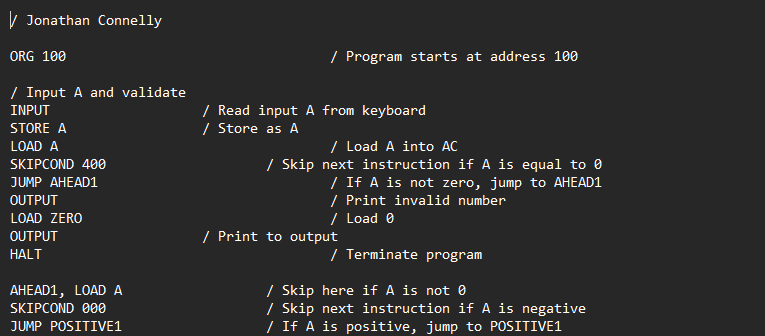

Project 1
One of my final projects for CGS 3269 under Professor Montagne. He had tasked us with creating a program in assembly language that would multiply 4 numbers together, first in two pairs, and then the resulting two operands together.
I learned a lot about both assembly and the logic behind it through this course and this project. It has been super helpful for me going forwards learning different programming languages and other high-level computer science topics.